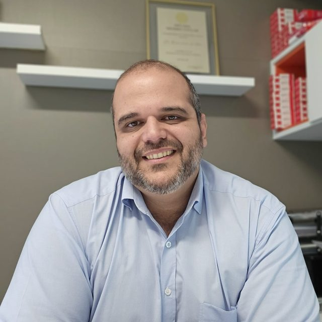

Atendo em Santarém e, todo mês, em Óbidos, Oriximiná, Monte Alegre, Alenquer, Uruará, Juruti e Parintins. Consulta e ultrassom vascular no mesmo atendimento.

As vagas por cidade são limitadas. O agendamento é feito pelo WhatsApp da clínica de cada cidade.
Centro Clínico João XXIII, Tv. Silvino Pinto, 913. Dentro da Clínica Hope, 1º andar (elevador).
(93) 99118-5001
AgendarR. Barão do Rio Branco, 2873, Santa Terezinha.
(93) 99167-5288
AgendarRua Rui Barbosa, 575, Cidade Alta.
(93) 99101-7566
AgendarFaço a consulta e o exame de ultrassom das veias e artérias na mesma visita. Você sai sabendo o que tem e qual é o próximo passo.
Escleroterapia com espuma, feita no consultório. O número de sessões depende de cada caso e é definido na avaliação.
Tratamento da safena no consultório, sem corte, sem raquianestesia e sem internação. A técnica é escolhida conforme o calibre da veia no ultrassom.
Avaliação da circulação e tratamento de feridas crônicas nas pernas e nos pés, com atenção especial ao paciente diabético.
Angiologista e cirurgião vascular, baseado em Santarém. Levo consulta, ultrassom e procedimentos para cidades onde o paciente teria que viajar para ver um especialista vascular.